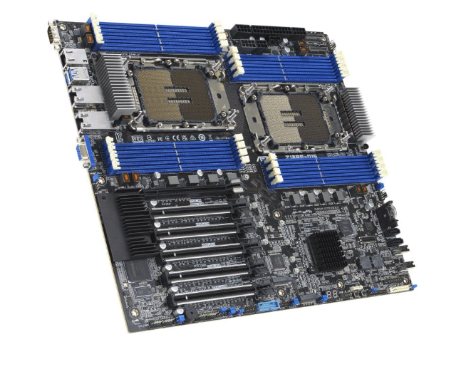

Placa Base

La placa base, también conocida como tarjeta madre, placa madre
o placa principal (motherboard o mainboard en inglés), es una
tarjeta de circuito impreso a la que se conectan los componentes
que constituyen la computadora. En muchos lugares de habla hispana
se usa la palabra inglesa con el artículo en femenino.[1][2]
Es una parte fundamental para montar cualquier computadora personal
de escritorio o portátil o algún dispositivo. Tiene instalados una
serie de circuitos integrados, entre los que se encuentra el
circuito integrado auxiliar (chipset), que sirve como centro de
conexión entre el microprocesador (CPU), la memoria de acceso
aleatorio (RAM), las ranuras de expansión y otros dispositivos.
Está instalada dentro de una carcasa o gabinete. Generalmente en la
parte de abajo o lateral derecho podemos ver conectores internos
para conectar dispositivos externos (como puertos USB de la carcasa)
o internos (como puertos SATA para conectar discos duros).
La placa base, además incluye un firmware llamado BIOS, que le
permite realizar las funcionalidades básicas, como pruebas de los
dispositivos, vídeo y manejo del teclado, configuración del equipo,
reconocimiento de dispositivos y carga del sistema operativo.
Una placa base típica admite los siguientes componentes:
-Conectores de alimentación de energía eléctrica (ver más abajo)
-Zócalo de CPU (monoprocesador) o zócalos de CPU (multiprocesador).
-Ranuras de RAM
-Chipset
-Ranuras PCI Express o PCI (en desuso)
-Conectores SATA
-Conectores USB Internos
-Conector de panel frontal
-Conector de audio